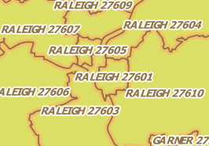

The Wake_ZIP_Codes layer's features should show the respective ZIPCODE field.

Please note that some labels are quite long and cross their feature's borders. In the next steps, we try to improve that by breaking the label in multiple lines, better position the label inside the feature's boundaries, and hiding labels that still cross the border.
Click Move to next step.